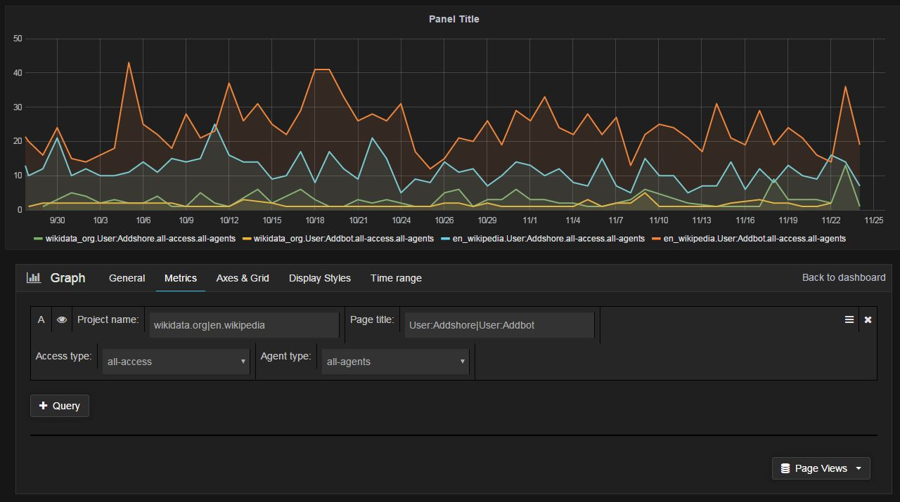
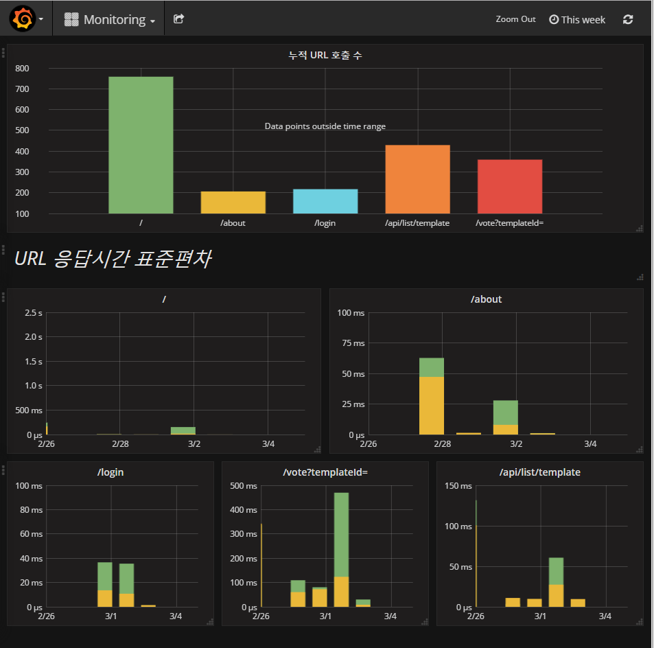

오픈소스 Grafana와 InfluxDB를 활용한 서버 모니터링
-읽음

오픈소스 Grafana와 InfluxDB를 활용한 서버 모니터링
왜 쓰는가?
서버의 리소스 (CPU 사용량 및 메모리 사용량)이나 웹 사이트 URL의 호출 횟수, 응답시간 등 서버 개발자가 실시간 모니터링해야 하는 자원을 쉽게 모아서 실시간으로 보여줄 수 있다.
간단한 사용 후기로는 Grafana가 그래프를 그려주는게 InfluxDB에 있는 데이터를 가져와서 그려준다. 그릴 데이터를 sql 쿼리로 가져온다. 신기하다!! 물론 DB는 InfluxDB외에도 다른 Plugin을 통해 가져올 수 있다.
Grafana는?
서버 모니터링 대시보드 오픈소스. 이런식으로 그려준다.!

얼마나 아름다운가!
시간대 별로. DB에서 사용자 쿼리에 의해 얻어진 데이터로 자동으로 그려준다.
Go와 Nodejs 디펜던시를 갖고있다.
InfluxDB는?
시계열(Time-series) DB. 시계열 데이터란 시간의 흐름에 따라 저장하는 데이터로 서버 환경에서 각종 지표를 수집하는 목적으로 사용한다. http protocol을 이용해 외부에서 제어도 가능하며 표준 SQL을 통해 데이터를 다룰 수 있다.
시작은 설치로부터!
Grafana 설치
- centos6 기준으로 설치한 내용입니다. 모든 설치는 패키지를 사용하지 않고 portable로 진행합니다.
Go 디펜던시 설치
go 다운로드 페이지
서버환경에 맞는 tar.gz 파일을 받고 tar로 압축을 해제한다.
GOPATH와 GOROOT 환경변수를 설정해야합니다.
GOPATH는 GO에서 받는 데이터를 보관할 장소. ~/grafana 를 만들고 이곳으로 설정했습니다.
GOROOT는 다운받은 go의 홈디렉토리입니다.
/.bashrc 에 다음과 같은 내용을 추가합니다.
1 |
|
그리고 수정한 .bashrc를 적용합니다.
1 |
|
그 후 grafana source 를 다운로드합니다.
1 |
|
그러면 $GOPATH에 grafana 디렉토리가 생긴 것을 볼 수 있습니다.
이어서 grafana를 설치하기 전에 nodejs를 설치합니다.
nodejs 디펜던시 설치
위 링크에서 nodejs를 다운받습니다. 최신 버전도 많이 나왔지만 저는 4.7사용.. 서버도 옛날꺼고..파이썬도 옛날거고…. node만 최신이면 꼬일것 같은 기분!
node도 환경변수로 등록해서 터미널에서 node를 입력했을 때 node 가 바로 실행되어야 합니다.
이제 진짜 grafana 설치
일단 go를 이용해 grafana를 받은 위치로 이동하고 설치를 시작합니다.
1 |
|
이제 여기까지 grafana의 설치가 끝났습니다!!!는 Back-end만.. 이대로 실행하면 Front-end 와장창
이제 grunt로 Front-end를 가져옵니다.
1 |
|
이제 진짜 설치 끝!!!
grafana 디렉토리의 ./bin/grafana-server 를 실행시킵니다.
그러면 기본적으로 3000번 포트로 구동되며. http://localhost:3000 로 접근해서 확인할 수 있습니다. 일단 다른 프로그램이 3000번을 잡고있으면 안된다!
정말 설치만 하고 실행했다. 설정파일을 통해 admin 계정 등 보안을 위해 많은 설정이 필요하다
InfluxDB 설치
이제 데이터를 예쁘게 그려줄 대쉬보드를 설치했으니 데이터를 저장할 DB를 설치해야한다.
1 |
|
2017-03-03일 기준이므로
https://portal.influxdata.com/downloads#influxdb
에서 최신버전을 확인하고 설치하는 것을 추천. Standalone 으로!!!!
다운로드가 완료되면 influxdb 하위 ./usr/bin 의 influxd를 실행한다
influxd 가 influxDB 데몬이며 influx 는 influxDB 의 cli 클라이언트다.
Grafana와 InfluxDB 연동하기
가장 어려운 부분이었다.
Grafana 페이지. localhost:3000 에서 설정한다. 로그인을 해야한다면 기본 id는 admin, 기본 pw도 admin 이다.
이제 Grafana 페이지의 DataSource메뉴에서 InfluxDB를 연결한다.
ip와 포트를 연결하고 Save&Test 버튼을 누른다. 연결이 되었는지 안되었는지는 알려준다!!
초록불이 뜰때까지 정보들을 맞게 수정한다!!
Grafana에서 그래프 그리기
쉽다.
- Dashboard 추가.
- 그래프 추가
- 각 축에 쿼리문 작성
TIP. add query로 쿼리 추가해서 막 블록형태로 쿼리를 만든다.. 이거 쓰지말자.. 잘 안된다.
쿼리 쓰는데 옆에보면 햄버거 버튼이 있다. Toggle custom query를 통해 직접 query를 작성하자.
이렇게 해서 나온 내 서비스의 모니터링 페이지!!

후기
Grafana와 InfluxDB를 설치하고 그래프를 그리기까지 2~3일 삽질은 해야하지 않을까 생각했었다. 둘 다 처음사용해보는데다가 디펜던시가 몇가지 있어서 어디선가 터질꺼라 생각했다..! But 설치까지는 1시간만에 끝나버렸다..
문제는 설치보다 grafana 대시보드 구성과 시계열 데이터에 대한 이해! sql 을 이용해 그래프를 그린다는게 생각하기 힘들었다. 또 시계열 데이터를 어떻게 그려야 원하는 그래프가 나오는지 어렵다 ㅠㅜ.
grafana에 아쉬운점은 그래프 Scale 을 조절하기 힘들다는 것! 마우스를 이용해 끄적끄적하면 그래프도 좌우로 이동되고 Zoom in out도 되면 좋겠다!!!!
있는 기능인데 발견을 못한 것일수도!
좀 더 능숙하게 쓸 수 있도록 이것저것 해봐야겠다